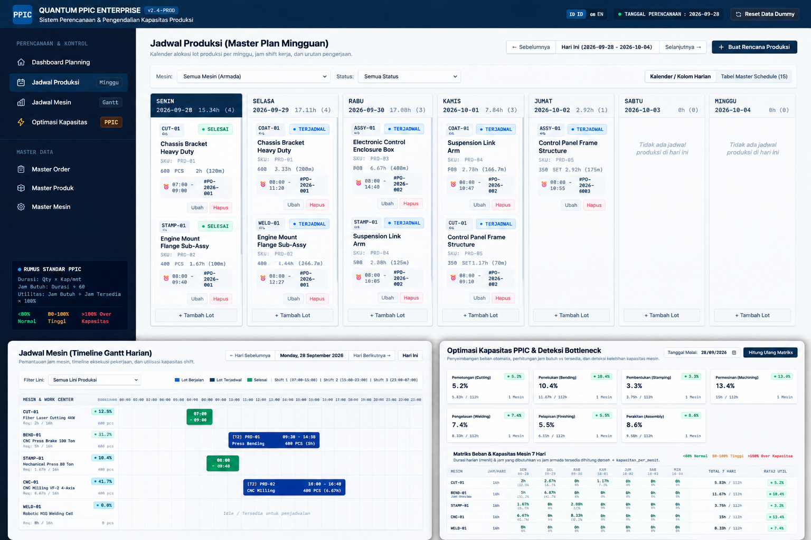

Production Planning & Control (PPIC)
Enterprise Production Scheduling, Machine Capacity Planning & Multi-Stage Simulation Platform

Production Planning & Control (PPIC) adalah sistem enterprise yang dikembangkan untuk mengotomatisasi dan mengoptimalkan perencanaan serta pengendalian kapasitas produksi manufaktur secara presisi.
Sistem ini mentransformasikan pesanan produksi (production order) menjadi rencana produksi yang siap dieksekusi berdasarkan detail spesifikasi produk, alokasi kebutuhan mesin, kapasitas proses aktual, dan jadwal harian operasional pabrik.
Dilengkapi kemampuan Multi-Machine Routing dan What-if Simulation, tim PPIC dapat merencanakan produk kompleks yang memerlukan 2–3 mesin atau lebih secara berurutan, memantau bottleneck mesin secara real-time, serta memastikan utilisasi kapasitas produksi berjalan pada tingkat efisiensi maksimal.
- Weekly Master Production Schedule (MPS): Perencanaan jadwal produksi induk mingguan terpadu untuk menyelaraskan target output pabrik dengan pesanan masuk.
- Daily & Per-Machine Production Schedule: Penjadwalan detail harian spesifik untuk tiap stasiun kerja dan mesin produksi guna menghindari downtime.
- Machine Gantt / Timeline Visualizer: Visualisasi jadwal dan alokasi beban mesin interaktif berbasis grafik Gantt timeline yang intuitif.
- Multi-Machine Routing Architecture: Manajemen alur rute produksi berantai di mana 1 produk/order dapat melibatkan 2–3 mesin atau tahapan proses berbeda.
- Precise Capacity Calculation: Kalkulasi otomatis kapasitas mesin berdasarkan kuantitas target, processing time, setup time, dan kapasitas operasional mesin.
- Capacity Utilization & Bottleneck Detection: Monitoring persentase utilisasi kapasitas dan deteksi dini titik jenuh (bottleneck) pada jalur produksi.
- Multi-Stage Production Simulation (What-If Analysis): Simulasi dinamis skenario perubahan order atau penambahan beban untuk menganalisis dampak terhadap jadwal keseluruhan sebelum dieksekusi di lapangan.
- Planning & Capacity Dashboard: Dashboard analitik terpusat yang merangkum metrik performa produksi, utilisasi mesin, dan pencapaian target harian/mingguan.
- Eliminasi Perencanaan Manual: Mempercepat penyusunan jadwal produksi yang kompleks dari hitungan jam menjadi hitungan menit.
- Optimasi Beban Mesin: Menyeimbangkan beban kerja antar mesin manufaktur dan mencegah terjadinya bottleneck kritis.
- Akurasi Pengiriman Pesanan (On-Time Delivery): Memastikan seluruh order produksi selesai tepat waktu sesuai komitmen jadwal kepada klien.